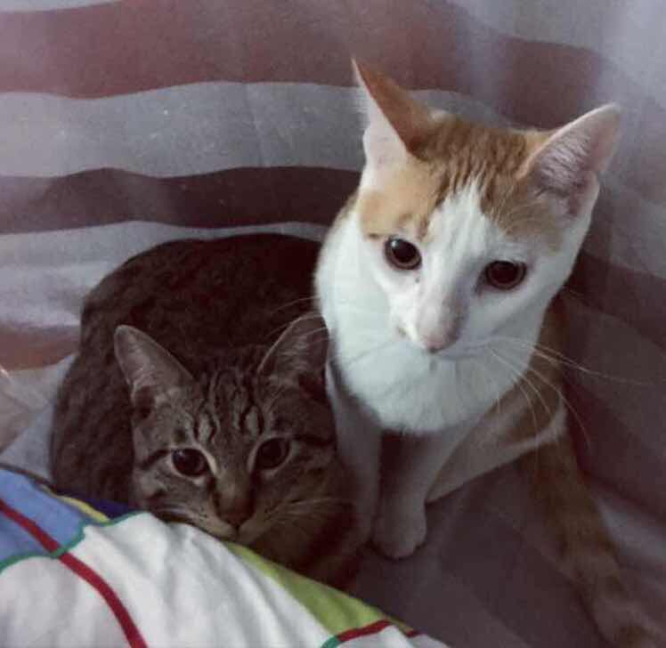

Zhimeng LUO

I am a master student of Information Science (MSIS) at the University of Pittsburgh.
Currently, my research interests include Deep Learning (DL), Computer Vision (CV), Nature Language Processing (NLP), and especially the intersections between them.